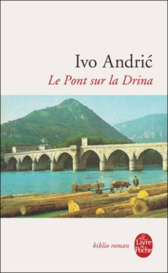
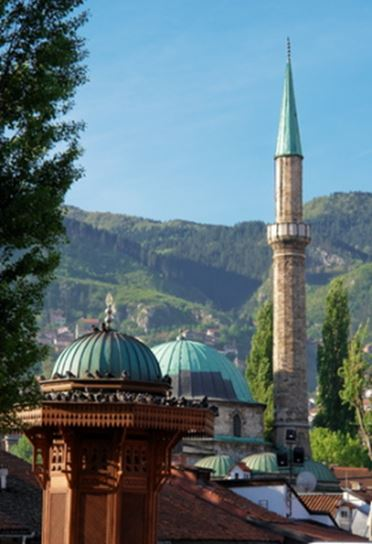
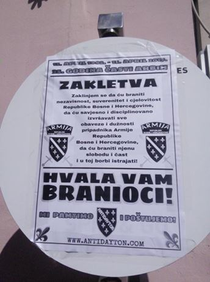
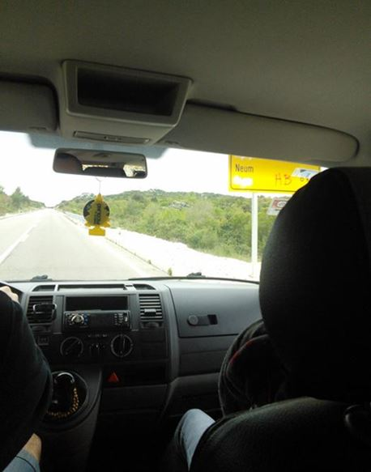
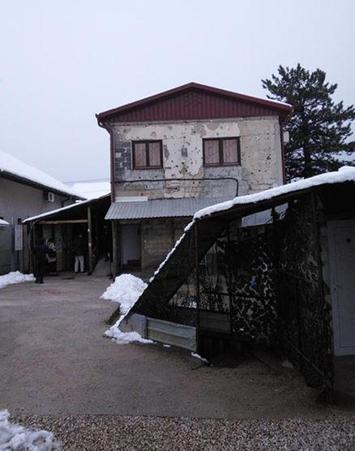
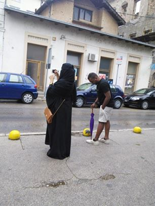

La Bosnie est un beau pays. Ici il y a de très belles montagnes, des ruines pittoresques de châteaux forts moyenâgeux, et il y a même un bout de plage, où la Bosnie accède à la mer. Malgré cette très grande beauté des paysages il semble que cette terre est imprégnée de quelque chose de tragique. Pendant mon voyage, je n’ai cessé de penser au livre « Le Pont sur la Drina » de l’écrivain bosniaque Ivo Andric.
Dans sa jeunesse, Andric se décrit lui-même comme un Croate, un catholique. Des années plus tard, il est considéré comme un Serbe. Dans ses œuvres, on trouve également de la sympathie pour les musulmans-Bosniaques. Il semble incarner le projet politique de la Yougoslavie qui reconnaît les cultures et religions, mais les dépasse dans un projet fédérateur. La nature de cette synthèse des différences est lié à la croyance de l’écrivain de la fondamentale unité des peuples Slaves du Sud, accompagné par- et rendu possible par une un Etat qui devait être la Yougoslavie, un dépassement que l’on trouve aussi dans les projets artistiques et littéraires communes des Slaves du Sud.
La tragédie principale dans le fameux roman d’Andric, qui bouleverse l’équilibre pacifique mais fragile des héros a pour origine les forces venus de l’extérieure : L’Empire Ottoman, et l’Empire Austro-Hongroise.
Foyer de guerres à travers les siècles, le dépassement des conflits après la deuxième guerre mondiale est lié à l’unification des Slaves du sud avec un Etat capable de protéger les équilibres fragiles de l’intervention déstabilisatrice venu de l’extérieur. Capable de s’affirmer comme un pays non-aligné à l’abri des tensions de la Guerre Froide, le fragile équilibre de la Yougoslavie n’a pas résisté longtemps à la mort de Tito, père de l’unification et de l’indépendance.
Après son décès, les rivalités entre les communautés se sont réveillées et les Serbes ont essayé d’exercer un contrôle sans partage sur l’ancienne Yougoslavie. Or, l’affirmation de l’hégémonie Serbe a réveillé un nationalisme Slovène, Croate, mais aussi le projet porté par Aliya Izetbegovich de créer un Etat islamique en Bosnie. La Guerre, les mouvements de population et l’autonomie donnée aux régions de la Bosnie ont enterré la vision des créateurs d’une unité des peuples Slaves du Sud. Aujourd’hui, dans la partie musulmane de Bosnie, même le plus petit village est doté d’au moins 2-3 nouvelles mosquées très visibles et modernes que l’on trouve depuis une quinzaine d’années partout dans les Balkans où vivent des musulmans.
Sur grandes nombres de ces mosquées se trouve des plaques indiquant que les mosquées ont été construites avec des fonds du Koweït ou d’un autre pays du Moyen Orient. C’est en cela que le paysage m’a semblé tragique, dans le sens où, comme les héros du « Pont sur la Drina », la coexistence pacifique qui avait duré quatre décennies sous Tito est aujourd’hui définitivement enterré, et la Bosnie est à nouveau un terrain d’influence de forces et d’intérêts venus de l’étranger.
La Bosnie est aujourd’hui majoritairement composé de trois communautés à la fois ethniques et religieuses : les serbes de confession orthodoxe, les croates, majoritairement catholiques et les musulmans de Bosnie.
Par sa forme constitutionnelle la Bosnie-Herzégovine est une République fédérale avec une forte autonomie des entités régionales. Les frontières et les statuts de ces régions ont été fixés par l’accord de Dayton. Or, si ces accords ont arrêté le conflit armé, aujourd’hui la majorité des personnes appartenant à ces trois ethnies n’est satisfait de cet accord. Dans la zone musulmane on voit souvent des affiches anti-Dayton.

Affiche anti-Dayton
La tension entre les communautés est assez visible et vive : on voit par exemple de nombreux graffitis et affiches dans la partie croate du pays. Dans la partie bosniaque musulmane, les noms topographiques en cyrillique (utilisé par serbes) sont presque systématiquement barrés.
Un autre exemple éclatant a été le musée du Tunnel de Sarajevo qui a servi pour ravitailler la ville pendant la Guerre.

Les noms topographiques barrés

L’entrée du musée « Tunnel de Sarajevo »
Aujourd’hui transformé en musée, c’est un lieu de réécriture de l’histoire où le filme insiste sur la Bosnie victime d’agression et met en scène des agriculteurs pauvres avec des chèvres. Au premier plan se trouvent les affaires personnelles d’Alia Izetbegovich, Président de la Bosnie de 1990 à 1996, érigé en héros national Bosniaque, et auteur du livre « L'Islam entre l'Est et l'Ouest » paru en 1982 qui a théorisé un Etat musulman sur le territoire de la Yougoslavie. Le musée passe sous silence la collaboration du héros de Bosnie avec les nazis pendant la Seconde Guerre mondiale, en tant qu’un des leaders de l'organisation pro-nazi « Al-Hidayah » qui a été fortement engagé dans le recrutement de jeunes musulmans de Bosnie dans la division SS « Khanjar » («L’épée »). Passé sous silence, la guerre fratricide des Slaves du Sud témoigne là encore de la tragédie thématisé d’Andric sur les effets dévastateurs de la prise d’influence d’une puissance étrangère.
On attribue aujourd’hui à Bakir Izetbegović, fils d’Alia Izetbegovich, membre bosniaque de la présidence de Bosnie-Herzégovine, une très grande fortune personnelle. Selon certains médias, la plupart de fortune a été accumulée pendant la guerre 1992-1995.
 Les arabes sur le rue de MostarEn outre, certains médias affirment que la richesse de Bakir Izetbegovic continue à croître grâce à la vente d’actifs bosniaques aux investisseurs en provenance des pays de Golf Persique. Outre la présence très marquante de mosquées nombreuses, leur présence physique est très visible en Bosnie.
Si leur présence et leur argent contribue sans doute à l’économie locale, on estime que 30 % de ces immigrants très visibles en Bosnie sont des adeptes du wahhabisme et du salafisme, des courants religieux et idéologiques radicaux qui fournissent l’idéologie de « Al-Qaïda » et ISIS. Ces chiffres qui proviennent du ministère de la Sécurité de Bosnie-Herzégovine sont complétés par d’autres études sur la vente important de terrains, biens immobiliers et entreprises bosniaques. Le ministère a expulsé 30 citoyens des Etats arabes et les interdit d'entrer en Bosnie en raison de leurs liens avec ISIS et autres organisations radicales.
Profondément marqué une histoire tragique, les territoires de l’ex Yougoslavie ont été le lieu d’affrontement des grandes puissances qui ont été catalyseur de son histoire tragique. Avant-hier l’Empire Ottoman et l’Empire Austro-Hongroise, hier l’Allemagne Nazie et plus récemment l’Europe qui s’est empressé de reconnaître les revendications d’autonomie de la Slovénie et de la Croatie, suivi de l’intervention d’OTAN contre la Serbie et l’imposition des accords de Dayton, la Bosnie semble aujourd’hui un front du choc civilisationnel rendu visible par l’alliance entre les pétrodollars du Moyen Orient et l’exportation d’un islam très conservateur qui ne peut que déstabiliser une région toujours tendue plus de vingt ans après la fin de la guerre ouverte en 1995.
Partager cette page